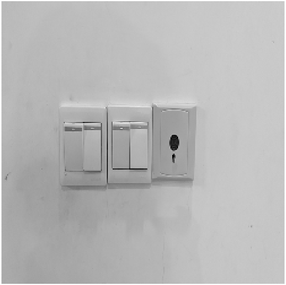
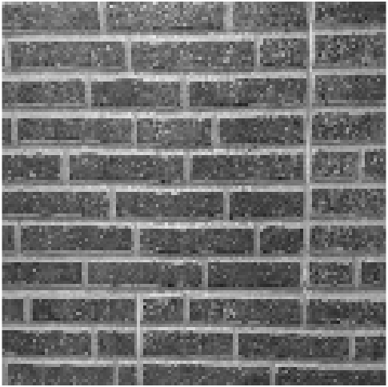
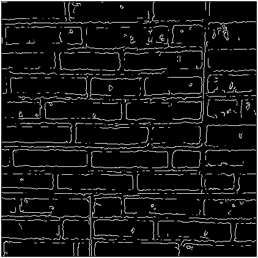
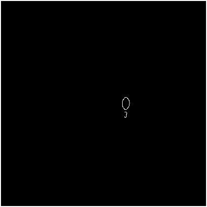

Graphic
1: Take two photographs
2: Compute frequency representations

3: Visualize kernels

4: Anti-aliasing


5: Canny edge detection thresholding


1: Take four photograph pairs or sets of 4.
2: FAST feature detector
2: FAST feature detector using Harris Cornerness metric Called FASTR
3: Point description and matching
4: RANSAC and Panoramas
I use a RANSAC parameter with 99.9 probabilty(confidence) and 2000 times(MaxNumTrials) for Fast. It seems that Fast has better confidence.
5: Four Pictures Panorama